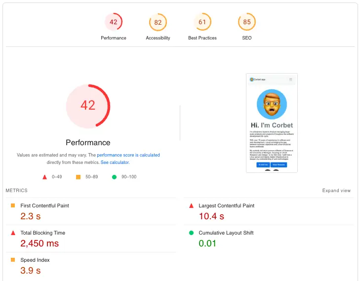
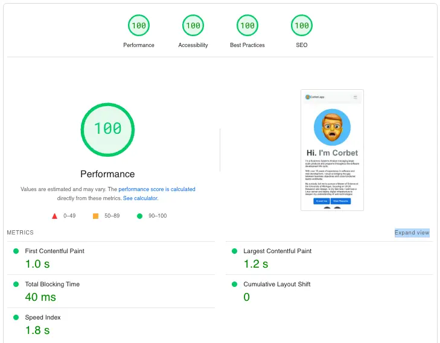

Site Updates
Initial Problem
When initially reviewed, Corbet.app faced multiple performance issues that led to a low Google Lighthouse score, negatively impacting user experience and search engine visibility. Common problems included large layout shifts, slow loading times, and blocking external resources, leading to many performance issues.
Analysis and Approach
A thorough audit was conducted to identify key performance bottlenecks and accessibility issues. The audit focused on areas such as network requests, render-blocking resources, accessibility compliance, and Core Web Vitals.

Key Changes Implemented
Following the audit, the following changes were made:
- Asset Optimization Images were compressed and converted to `WebP` format, and `srcset` was used for responsive images.
- CSS & JS Optimization External resources were removed or replaced with minified internal resources, and blocking scripts were deferred or moved to the footer.
- Accessibility Improvements Added skip-to-content links, ARIA roles, and improved focus states for better keyboard navigation and screen reader support.
- Preloading and Lazy-Loading Critical assets were preloaded, and non-essential images were lazy-loaded to reduce initial load times.
- Improved Caching and HTTP Headers Configured caching headers to reduce redundant resource fetching.
- Core Web Vitals Improvements Layout shifts were minimized by ensuring predictable layout behaviors, adding appropriate padding and margins, and reducing cumulative layout shift (CLS).
User Testing and Results
After implementing the optimizations, extensive testing was conducted to ensure consistent performance and accessibility across different devices and browsers. User feedback was gathered and used to further refine the website experience.
Key Results Achieved:
- Achieved 100/100 on all Google Lighthouse categories.
- Significantly reduced load times and improved user engagement.
- Enhanced accessibility compliance for a broader range of users.
